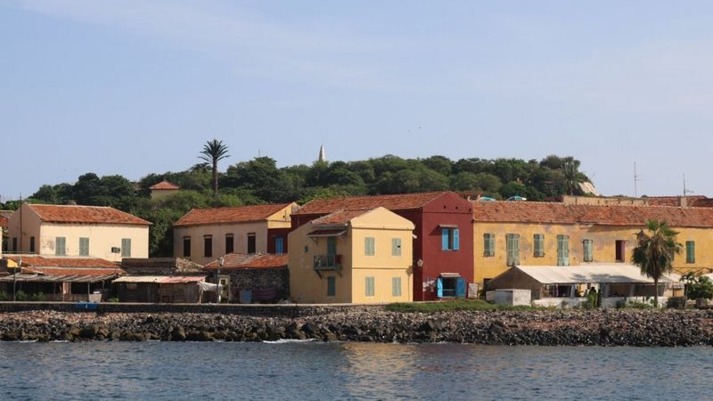

Avec ces quelques 1000 habitants, l’île chargée d’histoire est aussi un site touristique très visité.Voici 07 bonnes raisons de se rendre sur cette île riche de ses couleurs et de son patrimoine:
- Agreable traversée en chaloupe
- Baignade en eau turquoise
- Une architecture d'époque conservée 
- L'incontournable Maison des esclaves
- L'imposant canon de la côte ouest
- Le musée historique de Gorée
- Le Mémorial du Castel
Au départ du port de Dakar, il vous faudra entre 13 et 15 minutes en chaloupe pour rallier l’île de Gorée.Une traversée paisible bercée par le vent de l’atlantique nord.L’arrivée et le départ de la chaloupe est un moment très attendu. C’est le seul moyen de ravitailler l’île et de la visiter.Gorée est la seule commune du Sénégal « 100% carbone free » : aucune voiture n’y circule!
Gorée vous accueille avec sa plage située non loin du débarcadère.Les plages de Gorée sont parmi les rares de Dakar à être autorisées à la baignade. Alors chaque week-end, la jeunesse Dakaroise et les visiteurs viennent faire trempette dans les eaux turquoises qui entourent l’île.Après la baignade ou même avant, un petit tour de l’île à travers les petites ruelles typiques de l’île permet de découvrir les merveilles de Gorée.
Atteint en 1444 par le navigateur portugais Dinis Dias, Gorée a subi plusieurs influences qui ont faconné son architecture.
Portugais,
Anglais,Francais et Hollandais y ont laissé une empreinte bien visible.
Les rues aussi ont gardé leurs premieres dénominations.
La maison des esclaves est sans doute l’un des sites qui a reçu la visite des plus illustres
personnalités qui ont foulé l’île.
Lieu de pèlerinage et de souvenir dédié à la traite négrière, la maison a été visité par le Pape Jean Paul II,
le président américain Barack Obama ou encore Nelson Mandela.

Les visiteurs d’un jour qui découvrent le canon ont tous (ou presque) une phrase
d’émerveillement face à ce canon.
Un guide sur l’île nous indique qu’il avait une portée de « 14 km et aurait permis
à la France de Vichy de couler un bateau anglais le 23 septembre 1940 ». Pour atteindre le canon un passage par la ruelle des artistes s’impose.

Les curieux qui aiment voyager dans le passé pourront redécouvrir l’histoire du Sénégal
depuis l’âge de pierre.
Le musée est logé dans l’ancien fort d’Estrées édifié de 1852 à 1856.
Sa forme circulaire distinctive et son caractère imposant en font le premier bâtiment visible de la mer lorsque la chaloupe s'approche de l'île au départ de Dakar.

Le mémorial du Castel avec sa vue panoramique est le site le plus isolé de Gorée. Il a été inauguré par l’ex-président du Sénégal Abdou Diouf le 31 décembre 1999.